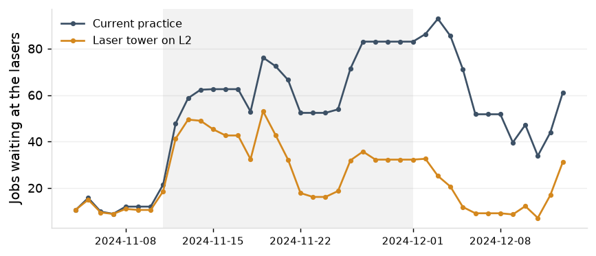
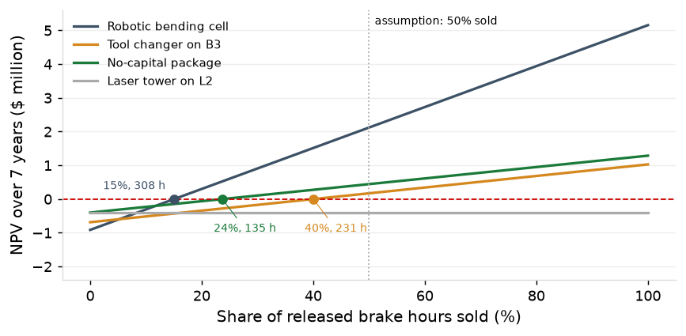

Project 8 report
Custom sheet-metal fabrication job shop, about 120 employees, one plant. Three capital options and the no-capital package on the shop model, jobs shipped in 2025, whole year and Q2 to Q4.
Sources: ERP, shop-floor data collection, maintenance exports (batch 20261003T152921Z-20250101); costs and rates supplied by the shop; 30 replications per scenario, 95% intervals. Payback and NPV are expected values under the stated assumptions.
1. Measured inputs
The brakes ran at 0.912 in 2025 with 116.9 setup hours a week, 22.7% of them on B3; the lasers ran at 0.737 and the robotic weld cell at 0.826. Jobs shipped in 2025 carried $24,796,802 of revenue over 16,268 crewed brake hours, $1,524 a brake hour.
| Measured input | 2025 | From |
|---|
| Brake utilization | 0.912 | P3 |
| Brake setup hours per week | 116.9 | P4 |
| of which tool change, at the assumed share | 52.6 (45% of setup, assumption) | P4, assumption |
| Setup hours per week on B3 | 26.5 (22.7% of brake setup hours) | P4 |
| Brake hours per week released by the P4 levers | 12.9 | P4 |
| Laser utilization | 0.737 | P3 |
| Laser utilization, weeks of November 11, 18 and 25, 2024 | 0.98, 0.95, 0.93 (94, 97 and 123 jobs waiting) | P1 |
| Robotic weld utilization | 0.826 | P3 |
| Saturday brake shifts and extended hours | 16 shifts, 116 hours | P6 |
| Revenue of jobs shipped in 2025 | $24,796,802 | ERP |
| Crewed brake hours worked | 16,268 | P3 |
| Revenue per brake hour | $1,524 | the two lines above |
| Brake standard hours a robotic cell can run | 30.3% (light, repeat parts, lots of 25 or more) | ERP routings |
Table 1. Measured inputs for 2025, from the marts.
2. What each option does on the floor
For the year the robotic bending cell raises on-time delivery by 8.1 points, the tool changer on B3 by 3.9, the laser tower by 1.1 and the no-capital package by 6.0. In Q2 to Q4 every capital option adds under a point (0.4, 0.0 and 0.4) against 1.2 for the package.
| Option | On time (points), 2025 | 90th-percentile lead time (days), 2025 | Saturday shifts, 2025 | Jobs shipped, 2025 | On time (points), Q2 to Q4 | 90th-percentile lead time (days), Q2 to Q4 |
|---|
| Tool changer on B3 | +3.9 (+2.9 to +5.0) | -1.8 (-2.3 to -1.4) | -4.4 (-5.6 to -3.2) | +12 (+5 to +18) | +0.4 (+0.1 to +0.6) | -1.0 (-1.2 to -0.8) |
| Laser tower on L2 | +1.1 (+0.0 to +2.1) | -0.5 (-0.9 to -0.1) | -1.4 (-2.6 to -0.2) | -7 (-16 to +3) | +0.0 (-0.4 to +0.4) | -0.5 (-0.7 to -0.2) |
| Robotic bending cell | +8.1 (+7.3 to +9.0) | -5.0 (-5.4 to -4.5) | -11.9 (-12.9 to -10.9) | -11 (-19 to -3) | +0.4 (+0.1 to +0.7) | -1.8 (-2.0 to -1.5) |
| No-capital package | +6.0 (+5.0 to +6.9) | -3.1 (-3.5 to -2.7) | +2.0 (+0.9 to +3.0) | +9 (-2 to +19) | +1.2 (+0.9 to +1.5) | -1.7 (-2.0 to -1.5) |
Table 2. Each option against current practice, 2025 and Q2 to Q4, with 95% intervals.

Figure 1. Change in on-time delivery and 90th-percentile lead time against current practice, by option alone and on the no-capital package, 2025 and Q2 to Q4, with 95% intervals.
3. The tool changer on B3
A press brake with automatic tool changing in place of B3 raises on-time delivery by 3.9 points (2.9 to 5.0) for the year and shortens the 90th percentile by 1.8 days; it saves 10.9 setup hours a week, against 11.1 for the no-capital package. Covering every brake setup at the same price would match the robotic cell (+8.3 points, 43.5 setup hours a week); one machine covers B3's 23% of setup hours.
4. The robotic bending cell
The cell raises on-time delivery by 8.1 points (7.3 to 9.0) for the year, shortens the 90th percentile by 5.0 days and removes 11.9 of 17.0 Saturday shifts. The parts it can run are 30.3% of brake standard hours; it works 46 hours a week and takes 39 hours a week off the manual brakes, whose setup hours rise by 344 a year. On top of the package it reaches 91.5% on time for the year and 92.1% in Q2 to Q4, with brake utilization at 0.79.
5. The laser tower
The tower clears the laser queue and changes nothing downstream: in the three weeks from November 11, 2024 the jobs waiting at the lasers fall from 64 to 34 a day and the jobs released in those weeks ship 73.1% on time against 73.1%; the package alone lifts those jobs to 82.4%. For the year the tower's effect is 1.1 points (0.0 to 2.1) and in Q2 to Q4 0.0 points (-0.4 to 0.4).

Figure 2. Jobs waiting at the lasers at the end of each day, November 4 to December 13, 2024, current practice against the laser tower; the shaded weeks are those from November 11.
6. Payback and NPV
On overtime and labor alone no option pays back within the 7-year horizon, and the no-capital package is net negative ($70,000 a year, the weld cell's second shift). If half the released brake hours are sold at the stated margin the robotic cell pays back in 1.6 years, the tool changer on B3 in 3.9, the tower not at all, and the package in 0.6. NPV reaches zero when 15% of the cell's released brake hours are sold (308 hours a year), 40% of the tool changer's (231) and 24% of the package's (135); the tower releases no constraint hours.
| Option | One-time cost | Maintenance a year | Overtime avoided | Labor | Overtime and labor alone | With the throughput value of released constraint hours (assumption: 50% sold at 40% margin) | Share of released brake hours sold for NPV of zero | Jobs shipped in the model |
|---|
| Net a year | Payback (years) | NPV | Throughput value | Net a year | Payback (years) | NPV |
|---|
| Tool changer on B3 | $735,000 | $18,000 | $6,627 | $21,566 | $10,193 | beyond 7 years | -$685,376 | $175,992 | $186,185 | 3.9 | $171,425 | 40% (231 hours a year) | +12 (+5 to +18) |
| Laser tower on L2 | $460,000 | $9,000 | $1,550 | $20,131 | $12,681 | beyond 7 years | -$398,264 | $0 | $12,681 | beyond 7 years | -$398,264 | not reached | -7 (-16 to +3) |
| Robotic bending cell | $1,030,000 | $25,000 | $16,781 | $32,204 | $23,985 | beyond 7 years | -$913,232 | $623,326 | $647,311 | 1.6 | $2,121,380 | 15% (308 hours a year) | -11 (-19 to -3) |
| No-capital package | $60,000 | $10,000 | $1,611 | -$61,351 | -$69,740 | none | -$399,522 | $173,235 | $103,495 | 0.6 | $443,858 | 24% (135 hours a year) | +9 (-2 to +19) |
Table 3. Payback and NPV against current practice at 10% over 7 years, before tax: overtime and labor alone, and with the throughput value of released constraint hours.

Figure 3. NPV over 7 years against the share of released brake hours sold, with the zero line and the 50% assumption marked.
7. Added to the package
On top of the no-capital package the robotic cell adds 3.5 points for the year, the tool changer on B3 1.8 and the laser tower 0.7. At its own cost against what it adds, the cell reaches an NPV of zero at 16% (324 hours a year) of released brake hours sold and the tool changer at 46% (241 hours a year).
| Option | One-time cost | Maintenance a year | Overtime avoided | Labor | Overtime and labor alone | With the throughput value of released constraint hours (assumption: 50% sold at 40% margin) | Share of released brake hours sold for NPV of zero | Jobs shipped in the model |
|---|
| Net a year | Payback (years) | NPV | Throughput value | Net a year | Payback (years) | NPV |
|---|
| Package + tool changer on B3 | $735,000 | $18,000 | $1,543 | $20,211 | $3,754 | beyond 7 years | -$716,724 | $159,608 | $163,362 | 4.5 | $60,314 | 46% (241 hours a year) | +1 (-9 to +11) |
| Package + laser tower on L2 | $460,000 | $9,000 | -$388 | $19,881 | $10,493 | beyond 7 years | -$408,914 | $0 | $10,493 | beyond 7 years | -$408,914 | not reached | -6 (-16 to +3) |
| Package + robotic bending cell | $1,030,000 | $25,000 | $2,592 | $36,208 | $13,799 | beyond 7 years | -$962,819 | $628,488 | $642,287 | 1.6 | $2,096,921 | 16% (324 hours a year) | -39 (-46 to -32) |
Table 4. Each option added to the no-capital package: its own cost against what it adds beyond the package.
8. The package against the machines
The no-capital package delivers more on-time improvement than the tool changer on B3 (6.0 against 3.9 points) and 73% of the robotic cell's (8.1), for $60,000 against $735,000 and $1,030,000.
Recommendation
Implement the no-capital package first. The robotic bending cell is the capital option with the largest effect and the lowest break-even: take it up when the shop can show that 324 of the released brake hours a year will be sold (308 without the package). Take the tool changer on B3 only if 40% of its released hours (231 a year) will be sold. Do not buy the laser tower.
Target: 95% on time in every quarter.
| Action | Owner | When |
|---|
| Implement the no-capital package: setup program (May 2026), weld cell second shift (April 2026), planned Saturdays (November 2026), as in the P5 report | Brake supervisor, production manager, plant manager | April to November 2026 |
| Prepare the robotic bending cell case with a sold-hours test | Plant manager, sales manager | June 2026 |
| Decline the laser tower | Plant manager | January 2026 |
Follow-up: Released brake hours sold tracked monthly against the break-even once the package is in place.
Method and data
The options run on the P5 shop model, 30 replications each; current practice and the no-capital package are the P5 runs. The tool changer multiplies the setups that run on B3 by 0.6175, dispatch unchanged; the laser tower adds 6 unattended hours after second shift on L2; the robotic cell is a sixth brake on two shifts at 0.875 availability that runs light, repeat parts in lots of 25 or more.
Overtime is the model's Saturday shifts and extended hours against current practice at a two-operator crew, the labor rate and the premium. Labor lines value hours saved or added at the loaded rate whether or not headcount changes: setup hours saved, manual brake hours displaced less the cell's own hours at 0.5 operator, the weld cell's second-shift hours with the differential, and the tower's operator hours.
The throughput line assumes the released hours are sold; the model, replaying the 2025 orders, ships within 13 jobs of current practice under every option alone. Only brake hours carry throughput value. The robotic cell raises setup hours on the manual brakes by 344 a year because it takes the long runs and leaves the short lots.
Payback is the one-time cost over the net annual benefit; NPV discounts 7 years of that benefit at 10%, with no residual value, before tax.
| Assumption | Value | Unit | Source |
|---|
| Press brake with automatic tool changing: equipment | 650,000 | USD | Supplied by the shop |
| installation, tooling and training | 85,000 | USD | Supplied by the shop |
| maintenance | 18,000 | USD a year | Supplied by the shop |
| share of a brake setup that is tool change | 0.45 | share | Supplied by the shop |
| share of the tool change the changer removes | 0.85 | share | Supplied by the shop |
| brake it replaces; the reduction applies to the setups on that machine | B3 | | Supplied by the shop |
| Second automated laser tower: equipment | 420,000 | USD | Supplied by the shop |
| installation | 40,000 | USD | Supplied by the shop |
| maintenance | 9,000 | USD a year | Supplied by the shop |
| unattended laser hours added | 30 | hours a week | Supplied by the shop |
| laser fitted | L2 | | Supplied by the shop |
| operator hours saved | 10 | hours a week | Supplied by the shop |
| Robotic bending cell: equipment | 900,000 | USD | Supplied by the shop |
| installation, tooling and programming | 130,000 | USD | Supplied by the shop |
| maintenance | 25,000 | USD a year | Supplied by the shop |
| brake hours added | 70 | hours a week | Supplied by the shop |
| share of brake standard hours it can run | 0.35 | share | Supplied by the shop |
| parts it can run | light parts, repeat parts, lots of 25 pieces or more | | Supplied by the shop |
| operator hours per cell hour | 0.5 | hours | Supplied by the shop |
| No-capital package: setup program, one time | 60,000 | USD | Supplied by the shop |
| setup program upkeep | 10,000 | USD a year | Supplied by the shop |
| operators on the weld cell's second shift | 1 | operators | Supplied by the shop |
| second-shift differential | 0.1 | share of the labor rate | Supplied by the shop |
| Labor rate, loaded | 38.0 | USD an hour | Supplied by the shop |
| Overtime premium | 0.5 | share of the labor rate | Supplied by the shop |
| Operators on a Saturday or extended brake shift | 2 | operators | Supplied by the shop |
| Discount rate | 0.1 | a year | Supplied by the shop |
| Horizon | 7 | years | Supplied by the shop |
| Residual value | 0.0 | share of equipment cost | Supplied by the shop |
| Taxes and depreciation | excluded | | Supplied by the shop |
| Share of released constraint hours sold | 0.5 | share | Supplied by the shop |
| Contribution margin on revenue per brake hour | 0.4 | share | Supplied by the shop |
| Laser hours carry throughput value | no | | Supplied by the shop |
Table 5. Assumptions.
Appendix
Table 6. Scenario results, 2025
| Scenario | On time | 90th-percentile lead time | Mean WIP | Saturday shifts | Extended hours | Brake utilization | Laser utilization | Jobs shipped |
|---|
| Current practice | 82.0% | 22.9 | 233 | 17.0 | 104 | 0.933 | 0.741 | 5,227 |
| No-capital package | 88.0% | 19.8 | 207 | 18.9 | 44 | 0.902 | 0.743 | 5,236 |
| Tool changer on B3 | 86.0% | 21.1 | 217 | 12.6 | 58 | 0.906 | 0.742 | 5,239 |
| Laser tower on L2 | 83.1% | 22.4 | 228 | 15.6 | 98 | 0.931 | 0.640 | 5,220 |
| Robotic bending cell | 90.2% | 18.0 | 189 | 5.0 | 0 | 0.832 | 0.739 | 5,216 |
| Tool changing at every setup | 90.3% | 18.0 | 190 | 5.0 | 1 | 0.819 | 0.740 | 5,214 |
| Package + tool changer on B3 | 89.8% | 18.7 | 196 | 18.7 | 21 | 0.874 | 0.743 | 5,237 |
| Package + laser tower on L2 | 88.7% | 19.4 | 201 | 19.7 | 38 | 0.901 | 0.641 | 5,229 |
| Package + robotic bending cell | 91.5% | 16.7 | 180 | 18.8 | 0 | 0.788 | 0.742 | 5,197 |
| Package + tool changing at every setup | 91.6% | 16.8 | 180 | 18.9 | 0 | 0.783 | 0.742 | 5,197 |
Table 7. Difference from current practice, 2025
| Option | On time (points) | 90th-percentile lead time (days) | Mean WIP | Saturday shifts | Extended hours | Brake utilization (points) | Laser utilization (points) | Jobs shipped |
|---|
| No-capital package | +6.0 (+5.0 to +6.9) | -3.1 (-3.5 to -2.7) | -26 (-29 to -23) | +2.0 (+0.9 to +3.0) | -60 (-68 to -52) | -3.0 (-3.3 to -2.8) | +0.2 (-0.1 to +0.5) | +9 (-2 to +19) |
| Tool changer on B3 | +3.9 (+2.9 to +5.0) | -1.8 (-2.3 to -1.4) | -16 (-19 to -13) | -4.4 (-5.6 to -3.2) | -46 (-56 to -36) | -2.6 (-2.9 to -2.4) | +0.1 (-0.2 to +0.3) | +12 (+5 to +18) |
| Laser tower on L2 | +1.1 (+0.0 to +2.1) | -0.5 (-0.9 to -0.1) | -5 (-8 to -2) | -1.4 (-2.6 to -0.2) | -5 (-17 to +6) | -0.2 (-0.4 to +0.1) | -10.1 (-10.4 to -9.9) | -7 (-16 to +3) |
| Robotic bending cell | +8.1 (+7.3 to +9.0) | -5.0 (-5.4 to -4.5) | -44 (-46 to -41) | -11.9 (-12.9 to -10.9) | -103 (-112 to -95) | -10.1 (-10.3 to -9.9) | -0.2 (-0.5 to +0.1) | -11 (-19 to -3) |
| Tool changing at every setup | +8.3 (+7.3 to +9.2) | -5.0 (-5.3 to -4.6) | -43 (-46 to -40) | -12.0 (-12.9 to -11.1) | -103 (-111 to -95) | -11.3 (-11.6 to -11.1) | -0.1 (-0.5 to +0.2) | -13 (-25 to -2) |
| Package + tool changer on B3 | +7.8 (+6.8 to +8.8) | -4.2 (-4.7 to -3.8) | -37 (-40 to -34) | +1.7 (+0.6 to +2.8) | -83 (-93 to -73) | -5.8 (-6.1 to -5.6) | +0.2 (-0.1 to +0.4) | +10 (+0 to +19) |
| Package + laser tower on L2 | +6.7 (+5.6 to +7.8) | -3.5 (-4.0 to -3.1) | -32 (-35 to -28) | +2.8 (+1.9 to +3.7) | -66 (-76 to -56) | -3.1 (-3.4 to -2.9) | -10.0 (-10.3 to -9.7) | +2 (-10 to +14) |
| Package + robotic bending cell | +9.5 (+8.6 to +10.4) | -6.2 (-6.7 to -5.7) | -53 (-56 to -51) | +1.9 (+0.7 to +3.0) | -104 (-112 to -95) | -14.4 (-14.7 to -14.2) | +0.1 (-0.2 to +0.3) | -30 (-40 to -20) |
| Package + tool changing at every setup | +9.6 (+8.6 to +10.6) | -6.1 (-6.5 to -5.7) | -53 (-55 to -50) | +1.9 (+1.0 to +2.8) | -104 (-112 to -95) | -15.0 (-15.2 to -14.7) | +0.1 (-0.2 to +0.5) | -30 (-40 to -19) |
Table 8. On top of the no-capital package: difference from the package, 2025
| Option | On time (points) | 90th-percentile lead time (days) | Mean WIP | Saturday shifts | Extended hours | Brake utilization (points) | Laser utilization (points) | Jobs shipped |
|---|
| Package + tool changer on B3 | +1.8 (+1.4 to +2.3) | -1.1 (-1.3 to -0.9) | -11 (-13 to -10) | -0.2 (-1.1 to +0.6) | -23 (-30 to -17) | -2.8 (-3.0 to -2.6) | -0.1 (-0.4 to +0.3) | +1 (-9 to +11) |
| Package + laser tower on L2 | +0.7 (+0.2 to +1.2) | -0.4 (-0.7 to -0.1) | -5 (-7 to -3) | +0.8 (-0.1 to +1.7) | -6 (-12 to +0) | -0.1 (-0.3 to +0.1) | -10.3 (-10.5 to -10.0) | -6 (-16 to +3) |
| Package + robotic bending cell | +3.5 (+3.1 to +3.9) | -3.1 (-3.3 to -2.8) | -27 (-29 to -26) | -0.1 (-1.1 to +0.9) | -44 (-49 to -39) | -11.4 (-11.6 to -11.1) | -0.2 (-0.5 to +0.2) | -39 (-46 to -32) |
| Package + tool changing at every setup | +3.6 (+3.2 to +4.1) | -3.0 (-3.3 to -2.7) | -27 (-28 to -25) | +0.0 (-0.8 to +0.8) | -44 (-49 to -39) | -11.9 (-12.2 to -11.6) | -0.1 (-0.4 to +0.2) | -39 (-49 to -28) |
Table 9. Scenario results, 2025 Q2 to Q4
| Scenario | On time | 90th-percentile lead time | Mean WIP | Saturday shifts | Extended hours | Brake utilization | Laser utilization | Jobs shipped |
|---|
| Current practice | 90.6% | 17.1 | 196 | 5.4 | 7 | 0.920 | 0.748 | 3,772 |
| No-capital package | 91.8% | 15.3 | 182 | 9.3 | 0 | 0.886 | 0.750 | 3,739 |
| Tool changer on B3 | 90.9% | 16.1 | 187 | 4.5 | 1 | 0.888 | 0.749 | 3,744 |
| Laser tower on L2 | 90.6% | 16.6 | 193 | 4.9 | 8 | 0.918 | 0.650 | 3,761 |
| Robotic bending cell | 90.9% | 15.3 | 179 | 3.3 | 0 | 0.820 | 0.747 | 3,755 |
| Tool changing at every setup | 91.3% | 15.3 | 179 | 3.1 | 0 | 0.807 | 0.748 | 3,752 |
| Package + tool changer on B3 | 92.0% | 15.2 | 178 | 9.3 | 0 | 0.861 | 0.749 | 3,745 |
| Package + laser tower on L2 | 91.9% | 15.3 | 180 | 10.3 | 0 | 0.888 | 0.650 | 3,740 |
| Package + robotic bending cell | 92.1% | 15.0 | 173 | 9.6 | 0 | 0.784 | 0.749 | 3,764 |
| Package + tool changing at every setup | 92.1% | 15.1 | 173 | 9.5 | 0 | 0.778 | 0.750 | 3,759 |
Table 10. Difference from current practice, 2025 Q2 to Q4
| Option | On time (points) | 90th-percentile lead time (days) | Mean WIP | Saturday shifts | Extended hours | Brake utilization (points) | Laser utilization (points) | Jobs shipped |
|---|
| No-capital package | +1.2 (+0.9 to +1.5) | -1.7 (-2.0 to -1.5) | -14 (-16 to -13) | +3.9 (+3.0 to +4.8) | -7 (-10 to -5) | -3.4 (-3.7 to -3.0) | +0.2 (-0.2 to +0.5) | -33 (-43 to -23) |
| Tool changer on B3 | +0.4 (+0.1 to +0.6) | -1.0 (-1.2 to -0.8) | -9 (-11 to -8) | -0.9 (-2.0 to +0.1) | -6 (-9 to -4) | -3.2 (-3.5 to -2.9) | +0.1 (-0.2 to +0.4) | -28 (-40 to -16) |
| Laser tower on L2 | +0.0 (-0.4 to +0.4) | -0.5 (-0.7 to -0.2) | -3 (-5 to -1) | -0.5 (-1.4 to +0.4) | +1 (-3 to +5) | -0.2 (-0.5 to +0.1) | -9.8 (-10.1 to -9.5) | -11 (-22 to -1) |
| Robotic bending cell | +0.4 (+0.1 to +0.7) | -1.8 (-2.0 to -1.5) | -17 (-18 to -15) | -2.1 (-2.8 to -1.4) | -7 (-10 to -5) | -10.0 (-10.3 to -9.7) | -0.2 (-0.5 to +0.2) | -17 (-26 to -9) |
| Tool changing at every setup | +0.7 (+0.5 to +0.9) | -1.8 (-2.0 to -1.5) | -17 (-19 to -16) | -2.3 (-3.2 to -1.4) | -7 (-10 to -5) | -11.4 (-11.7 to -11.1) | -0.1 (-0.4 to +0.3) | -20 (-30 to -11) |
| Package + tool changer on B3 | +1.4 (+1.2 to +1.6) | -1.9 (-2.1 to -1.7) | -18 (-20 to -17) | +3.9 (+3.0 to +4.9) | -7 (-10 to -5) | -6.0 (-6.3 to -5.7) | +0.1 (-0.3 to +0.4) | -27 (-37 to -17) |
| Package + laser tower on L2 | +1.3 (+1.1 to +1.6) | -1.8 (-2.0 to -1.6) | -16 (-18 to -15) | +4.9 (+4.1 to +5.7) | -7 (-10 to -5) | -3.2 (-3.5 to -2.9) | -9.8 (-10.2 to -9.5) | -32 (-44 to -21) |
| Package + robotic bending cell | +1.5 (+1.2 to +1.8) | -2.1 (-2.3 to -1.8) | -23 (-24 to -21) | +4.2 (+3.2 to +5.2) | -7 (-10 to -5) | -13.6 (-13.9 to -13.3) | +0.0 (-0.3 to +0.4) | -8 (-18 to +2) |
| Package + tool changing at every setup | +1.6 (+1.3 to +1.8) | -2.0 (-2.3 to -1.7) | -23 (-25 to -22) | +4.1 (+3.4 to +4.9) | -7 (-10 to -5) | -14.2 (-14.5 to -14.0) | +0.2 (-0.2 to +0.6) | -14 (-24 to -3) |
Table 11. On top of the no-capital package: difference from the package, 2025 Q2 to Q4
| Option | On time (points) | 90th-percentile lead time (days) | Mean WIP | Saturday shifts | Extended hours | Brake utilization (points) | Laser utilization (points) | Jobs shipped |
|---|
| Package + tool changer on B3 | +0.2 (+0.0 to +0.4) | -0.1 (-0.2 to +0.0) | -4 (-5 to -3) | +0.0 (-0.7 to +0.8) | +0 (+0 to +0) | -2.6 (-2.9 to -2.3) | -0.1 (-0.4 to +0.2) | +6 (+0 to +12) |
| Package + laser tower on L2 | +0.1 (-0.1 to +0.3) | +0.0 (-0.2 to +0.1) | -2 (-3 to -1) | +1.0 (+0.2 to +1.9) | +0 (+0 to +0) | +0.1 (-0.2 to +0.4) | -10.0 (-10.2 to -9.7) | +1 (-6 to +8) |
| Package + robotic bending cell | +0.3 (+0.1 to +0.5) | -0.3 (-0.5 to -0.2) | -8 (-9 to -8) | +0.3 (-0.6 to +1.2) | +0 (+0 to +0) | -10.3 (-10.6 to -9.9) | -0.1 (-0.5 to +0.2) | +25 (+19 to +32) |
| Package + tool changing at every setup | +0.4 (+0.2 to +0.6) | -0.3 (-0.4 to -0.1) | -9 (-10 to -8) | +0.2 (-0.5 to +1.0) | +0 (+0 to +0) | -10.9 (-11.1 to -10.6) | +0.0 (-0.3 to +0.3) | +20 (+13 to +26) |
Table 12. Hours behind the money lines, per year, against current practice
| Option | Overtime operator hours avoided | Brake setup hours saved | Manual brake hours displaced | Robotic cell hours | Weld second-shift hours added | Released constraint hours carrying throughput value | B3 share of brake setup hours |
|---|
| No-capital package | 28 | 577 | 568 | 0 | 1,992 | 568 | 23.1% |
| Tool changer on B3 | 116 | 568 | 577 | 0 | 0 | 577 | 18.3% |
| Laser tower on L2 | 27 | 10 | 52 | 0 | 0 | 0 | 23.2% |
| Robotic bending cell | 294 | -344 | 2,045 | 2,394 | 0 | 2,045 | 21.1% |
| Tool changing at every setup | 295 | 2,263 | 2,265 | 0 | 0 | 2,265 | 23.7% |
| Package + tool changer on B3 | 55 | 1,109 | 1,092 | 0 | 1,992 | 1,092 | 17.6% |
| Package + laser tower on L2 | 21 | 580 | 578 | 0 | 1,992 | 578 | 22.9% |
| Package + robotic bending cell | 74 | 341 | 2,630 | 2,217 | 1,992 | 2,630 | 20.6% |
| Package + tool changing at every setup | 73 | 2,702 | 2,725 | 0 | 1,992 | 2,725 | 23.1% |
Table 13. The laser tower in the weeks of November 11 to December 1, 2024
| Scenario | Jobs waiting at the lasers, daily mean | Against current practice | On time, jobs released in the weeks | Against current practice (points) | Median lead time, jobs released in the weeks | Against current practice (days) |
|---|
| Current practice | 64 | | 73.1% | | 13.4 | |
| Laser tower on L2 | 34 | -30 (-34 to -26) | 73.1% | +0.0 (-2.7 to +2.7) | 13.2 | -0.2 (-0.7 to +0.2) |
| No-capital package | 63 | -1 (-5 to +4) | 82.4% | +9.3 (+6.8 to +11.9) | 12.5 | -0.9 (-1.3 to -0.5) |
| Package + laser tower on L2 | 38 | -26 (-31 to -21) | 83.0% | +9.9 (+7.1 to +12.7) | 12.1 | -1.3 (-1.6 to -0.9) |
Table 14. Payback and NPV against current practice, every scenario
| Option | One-time cost | Maintenance a year | Overtime avoided | Labor | Overtime and labor alone | With the throughput value of released constraint hours (assumption: 50% sold at 40% margin) | Share of released brake hours sold for NPV of zero | Jobs shipped in the model |
|---|
| Net a year | Payback (years) | NPV | Throughput value | Net a year | Payback (years) | NPV |
|---|
| No-capital package | $60,000 | $10,000 | $1,611 | -$61,351 | -$69,740 | none | -$399,522 | $173,235 | $103,495 | 0.6 | $443,858 | 24% (135 hours a year) | +9 (-2 to +19) |
| Tool changer on B3 | $735,000 | $18,000 | $6,627 | $21,566 | $10,193 | 72.1 | -$685,376 | $175,992 | $186,185 | 3.9 | $171,425 | 40% (231 hours a year) | +12 (+5 to +18) |
| Laser tower on L2 | $460,000 | $9,000 | $1,550 | $20,131 | $12,681 | 36.3 | -$398,264 | $0 | $12,681 | 36.3 | -$398,264 | not reached | -7 (-16 to +3) |
| Robotic bending cell | $1,030,000 | $25,000 | $16,781 | $32,204 | $23,985 | 42.9 | -$913,232 | $623,326 | $647,311 | 1.6 | $2,121,380 | 15% (308 hours a year) | -11 (-19 to -3) |
| Tool changing at every setup | $735,000 | $18,000 | $16,819 | $85,985 | $84,804 | 8.7 | -$322,139 | $690,592 | $775,396 | 0.9 | $3,039,954 | 5% (109 hours a year) | -13 (-25 to -2) |
| Package + tool changer on B3 | $795,000 | $28,000 | $3,154 | -$41,140 | -$65,986 | none | -$1,116,246 | $332,843 | $266,857 | 3.0 | $504,172 | 34% (376 hours a year) | +10 (+0 to +19) |
| Package + laser tower on L2 | $520,000 | $19,000 | $1,224 | -$41,470 | -$59,246 | none | -$808,436 | $176,213 | $116,967 | 4.4 | $49,443 | 47% (272 hours a year) | +2 (-10 to +14) |
| Package + robotic bending cell | $1,090,000 | $35,000 | $4,203 | -$25,465 | -$56,262 | none | -$1,363,907 | $801,723 | $745,461 | 1.5 | $2,539,215 | 17% (459 hours a year) | -30 (-40 to -20) |
| Package + tool changing at every setup | $795,000 | $28,000 | $4,142 | $19,411 | -$4,447 | none | -$816,648 | $830,859 | $826,412 | 1.0 | $3,228,320 | 10% (275 hours a year) | -30 (-40 to -19) |
Table 15. Each option added to the no-capital package, with the sensitivity
| Option | One-time cost | Maintenance a year | Overtime avoided | Labor | Overtime and labor alone | With the throughput value of released constraint hours (assumption: 50% sold at 40% margin) | Share of released brake hours sold for NPV of zero | Jobs shipped in the model |
|---|
| Net a year | Payback (years) | NPV | Throughput value | Net a year | Payback (years) | NPV |
|---|
| Package + tool changer on B3 | $735,000 | $18,000 | $1,543 | $20,211 | $3,754 | 195.8 | -$716,724 | $159,608 | $163,362 | 4.5 | $60,314 | 46% (241 hours a year) | +1 (-9 to +11) |
| Package + laser tower on L2 | $460,000 | $9,000 | -$388 | $19,881 | $10,493 | 43.8 | -$408,914 | $0 | $10,493 | 43.8 | -$408,914 | not reached | -6 (-16 to +3) |
| Package + robotic bending cell | $1,030,000 | $25,000 | $2,592 | $36,208 | $13,799 | 74.6 | -$962,819 | $628,488 | $642,287 | 1.6 | $2,096,921 | 16% (324 hours a year) | -39 (-46 to -32) |
| Package + tool changing at every setup | $735,000 | $18,000 | $2,531 | $80,762 | $65,293 | 11.3 | -$417,126 | $657,624 | $722,917 | 1.0 | $2,784,462 | 7% (141 hours a year) | -39 (-49 to -28) |